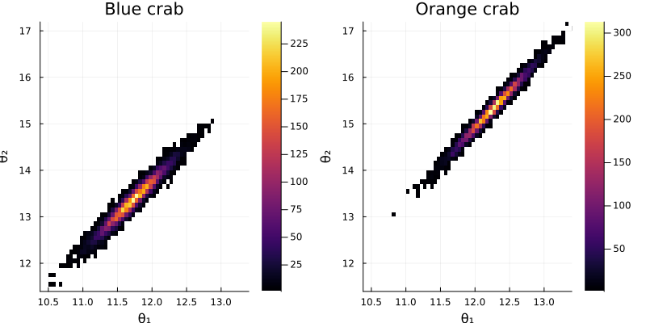
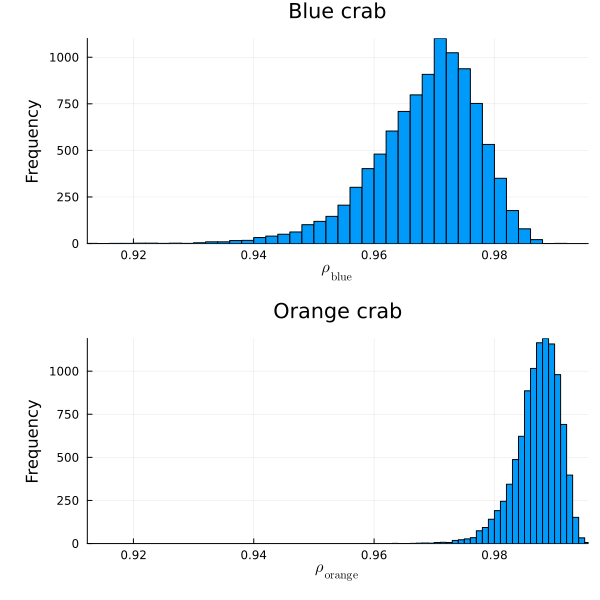

Exercise 7.3 Solution Example - Hoff, A First Course in Bayesian Statistical Methods
標準ベイズ統計学 演習問題 7.3 解答例
a)
Answer
import Pkg; Pkg.activate("..") using DelimitedFiles using Distributions using LinearAlgebra using StatsBase bluecrab = readdlm("../../Exercises/bluecrab.dat") orangecrap = readdlm("../../Exercises/orangecrab.dat") μ_blue = mean(bluecrab, dims=1) |> vec μ_orange = mean(orangecrap, dims=1) |> vec Λ_blue = S_blue = cov(bluecrab) Λ_orange = S_orange = cov(orangecrap) ν₀ = 4 # Gibbs sampler function bivariate_gibbs(S, Σ_init, μ₀, Λ₀, S₀, ν₀, Y) THETA = Matrix{Float64}(undef, S, 2) SIGMA = Matrix{Float64}(undef, S, 4) n = size(Y, 1) Σ = Σ_init ȳ = mean(Y, dims=1) |> vec for s in 1:S # update θ Λn = inv( inv(Λ₀) + n * inv(Σ) ) μn = Λn * ( inv(Λ₀) * μ₀ + n * inv(Σ) * ȳ ) |> vec dist = MvNormal(μn, Symmetric(Λn)) θ = rand(dist) # update Σ Sn = S₀ + (Y' .- θ) * (Y' .- θ)' Σ = rand(InverseWishart(n + ν₀, Sn)) # save results THETA[s, :] = vec(θ) SIGMA[s, :] = vec(Σ) end return THETA, SIGMA end S = 10000 # Blue crab THETA_blue, SIGMA_blue = bivariate_gibbs(S, Λ_blue, μ_blue, Λ_blue, S_blue, ν₀, bluecrab) # Orange crab THETA_orange, SIGMA_orange = bivariate_gibbs(S, Λ_orange, μ_orange, Λ_orange, S_orange, ν₀, orangecrap)
b)
Answer

- 両方の種で、\(\theta_1\) と \(\theta_2\) は正の相関を持つ。 ( \(\theta_1\) and \(\theta_2\) have a positive correlation in both species.)
- orange crab の方が blue crab よりも幅、深さともに大きい。 (Orange crab is larger in both width and depth than blue crab.)
c)
Answer
function get_pos_cor(SIGMA, p, S) COR = Array{Float64}(undef, p, p, S) for s in 1:S Sig = reshape(SIGMA[s, :], p, p) COR[:, :, s] = Sig ./ sqrt.(diag(Sig) * diag(Sig)') end return COR end p = bluecrab |> size |> last COR_mc_blue = get_pos_cor(SIGMA_blue, p, S) COR_mc_orange = get_pos_cor(SIGMA_orange, p, S)

mean(COR_mc_blue[1, 2, :] .< COR_mc_orange[1, 2, :] )
0.9893
- オレンジの方がブルーに比べて、幅と深さの相関が強い。 (Orange crab has a higher correlation between width and depth than blue crab.)